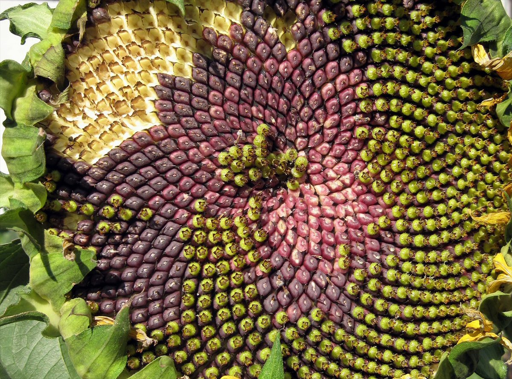

Qué es cierto (girasoles, filotaxis) y qué es mito (Partenón, cuerpo humano)
Pocos números tienen tanta fama como la razón áurea, φ ≈ 1,618. Se dice que está en el Partenón, en las pirámides, en el cuerpo humano, en las obras de Leonardo y en el caparazón del nautilo. Algunas de esas afirmaciones son ciertas y otras no tienen ninguna evidencia. Hay matemática genuina detrás del número y hay un fenómeno natural real y todavía discutido, la disposición de las hojas y las semillas en las plantas. También hay una larga lista de mitos que se repiten de libro en libro. Este artículo intenta separar unos de otros.
La definición está en los Elementos de Euclides, que la llamaba división de un segmento «en extrema y media razón». El matemático Keith Devlin destaca que Euclides no dijo nada sobre estética y le dio a la respuesta ese nombre nada romántico. La historia de MacTutor agrega que el número aparece en la construcción del pentágono regular, que probablemente ya conocían los pitagóricos. El primer cálculo decimal conocido es de 1597: Michael Mästlin le escribió a su exalumno Kepler que la parte mayor de un segmento de largo 1 dividido así mide «alrededor de 0,6180340». El nombre «divina proporción» viene del libro de Luca Pacioli, y «sección áurea» es mucho más moderno: MacTutor y Devlin coinciden en que aparece recién hacia 1835, en un libro de Martin Ohm, hermano del físico Georg Simon Ohm.
Las propiedades matemáticas son reales. Devlin menciona el pentagrama, los sólidos platónicos, la geometría fractal, ciertas estructuras cristalinas y los teselados de Penrose, emparentados con los cuasicristales. Y es cierto que los cocientes entre términos consecutivos de la sucesión de Fibonacci se acercan a φ: 89/55 ≈ 1,61818, a menos de 0,0002 del valor exacto (un cálculo propio). Según MacTutor, ese resultado se suele atribuir a Simson, en 1753, aunque Kepler lo conocía antes.
La aparición más sólida de φ en la naturaleza es la filotaxis, la disposición de las hojas en un tallo. Takuya Okabe, de la Universidad de Shizuoka, describe que, en la mayoría de los casos, las hojas sucesivas forman una espiral con un ángulo entre una y otra de 1/2, 1/3, 2/5 o 3/8 de vuelta, o bien con un ángulo límite de 137,5°: el ángulo áureo. Los numeradores y denominadores de esas fracciones son números de Fibonacci, y esa «serie principal» cubre más del 90 % de los casos observados. Okabe aclara que no es una ley universal, sino una tendencia notablemente extendida: también se observan otras fracciones, aunque con menos frecuencia.
Los girasoles muestran lo mismo en las espirales de sus semillas. Un experimento de ciencia ciudadana publicado en 2016 por Jonathan Swinton y colaboradores analizó 657 girasoles. En el subconjunto más confiable de datos, de 768 números de espirales, 565 eran números de Fibonacci y otros 67 tenían una estructura de Fibonacci de un tipo predefinido. Pero también hubo cabezas sin estructura de Fibonacci: la naturaleza favorece estos números, pero no siempre los respeta.

Repartir sin pisarse: imaginá que tenés que colocar semillas una por una alrededor de un centro, girando siempre el mismo ángulo entre una y la siguiente. Si el ángulo fuera exactamente media vuelta o un tercio de vuelta, las semillas se alinearían en pocas filas y dejarían huecos. Con un ángulo que no es ninguna fracción simple de la vuelta, las semillas nunca caen exactamente sobre las anteriores. Por qué las plantas eligen justamente 137,5° es la pregunta que todavía se discute.
Que la naturaleza favorece el ángulo áureo está bien establecido; por qué lo hace, no tanto. Okabe señala que todavía queda el problema fundamental de por qué solo algunos números son favorecidos: los modelos físicos o químicos suelen explicar el patrón como resultado de una dinámica propia, mientras que muchos biólogos piensan que el ángulo está determinado genéticamente, y según Okabe las explicaciones propuestas han sido cualitativas o teleológicas. Swinton y colaboradores hablan de explicaciones biomatemáticas que compiten entre sí. Okabe propone un mecanismo basado en la selección natural; François Bergeron y Christophe Reutenauer, otro basado en lo difícil que es aproximar un número por fracciones. La discusión sigue abierta.
Devlin, que reconoce haber repetido él mismo algunos de estos mitos, es tajante: no hay ninguna evidencia de que los antiguos griegos atribuyeran propiedades místicas a la razón áurea ni de que Leonardo da Vinci creyera que el cuerpo humano la contiene. Sobre el Partenón, dice que no hay evidencia de que se haya diseñado con ella y que hay buenas razones para pensar que no, y que basta mirar con cuidado las fotos que la «muestran» para ver dónde se colocan los rectángulos superpuestos. Sobre el cuerpo humano, el cociente entre la altura total y la altura del ombligo varía mucho entre personas y siempre da algo cercano a 1,6, pero no hay nada especial en 1,6: ¿por qué no 1,603? Tampoco hay evidencia sobre las pirámides de Egipto. Y numerosas pruebas no lograron mostrar un rectángulo que la mayoría de los observadores prefiera.
Incluso el nautilo, el ejemplo más repetido, es un error. Su caparazón crece según una espiral logarítmica, pero no según la razón áurea; Devlin admite haber cometido ese error en un artículo anterior. Sus fuentes son el trabajo del matemático George Markowsky, «Misconceptions about the golden ratio», de 1992, y el libro de Mario Livio sobre el número.
No todo es mito en el arte. Devlin menciona pintores que usaron la razón áurea de manera deliberada, como Paul Sérusier, Juan Gris, Gino Severini y Salvador Dalí, aunque parecen haber experimentado con el número por sí mismo más que por una razón estética intrínseca. El arquitecto Le Corbusier la defendió y la usó. Lo que no tiene fundamento es la idea de que esté escondida en las grandes obras de la Antigüedad o del Renacimiento.
Por qué siempre se «encuentra»: en cualquier objeto con muchas medidas posibles, algún cociente va a dar cerca de 1,6, del mismo modo que algún otro va a dar cerca de 1,5 o de 1,7. Si además se puede elegir dónde empieza y dónde termina cada medida, encontrar φ es casi inevitable. Es el mismo problema que el efecto de mirar en otro lado en la física de partículas: una coincidencia buscada en muchos lugares no es evidencia de nada.
La razón áurea no necesita mitos. Es un número con propiedades matemáticas notables, vinculado a la sucesión de Fibonacci, al pentágono y a los cuasicristales, y aparece de verdad en la disposición de hojas y semillas, un fenómeno cuya explicación todavía se discute. Lo del Partenón, el cuerpo humano y el nautilo es, hasta donde se sabe, una historia que se repite porque es linda, no porque sea cierta.
Pregunta para la comunidad: Medí el cociente entre tu altura y la altura de tu ombligo, y pedile a otras personas que hagan lo mismo. ¿Cuánto varían los resultados? ¿Qué rango de valores aceptarías como «igual a φ», y cuántas personas quedarían adentro si el número buscado fuera 1,6 o 1,65?